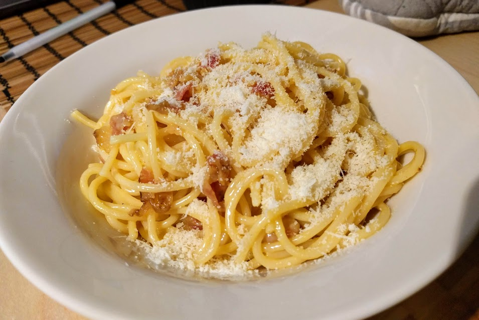

Carbonara véritable

Pour deux personnes :
- Une dizaine de tranches de bonne pancetta
- 200-250g de pâtes longues (spaghetti, tagliatelle…)
- 50g de parmesan (Parmigiano Reggiano de préférence)
- Trois jaunes d'œuf (le nombre de parts + 1)
- Sel, poivre, huile d'olive
- Couper les tranches de pancetta en bouts grossiers. Les faire revenir dans un petit peu d'huile d'olive, jusqu'à ce que ça devienne bien doré.
- Pendant ce temps, faire cuire les pâtes dans un grand volume d'eau avec du gros sel (idéalement, un litre par 100g de pâtes), un petit peu moins de temps que ce qui est indiqué sur le paquet. Il faut que l'eau bouille en permanence.
- Pendant ce temps, ajouter 40g de parmesan dans les jaunes d'œuf, avec un peu de sel et pas mal de poivre. Mélanger avec un fouet (ou un batteur électrique) jusqu'à ce que ça prenne une consistance bien crèmeuse. Ajouter une ou deux cuillères à soupe d'eau de cuisson des pâtes si c'est trop solide.
- Faire égoutter les pâtes, les laisser reposer un peu à couvert si le reste n'est pas encore fini, et les mélanger avec la sauce et la pancetta. Servir chaud dans des assiettes creuses, en saupoudrant de parmesan et en rajoutant un peu de poivre si besoin.
Retour à la liste des recettes